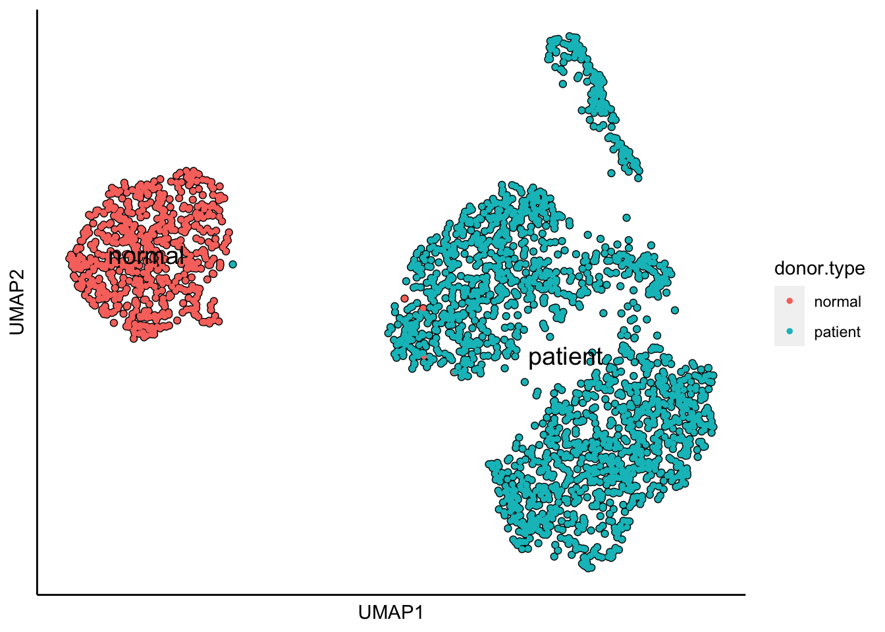
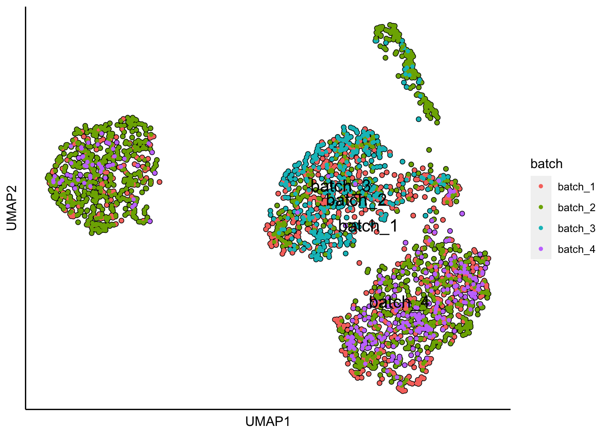
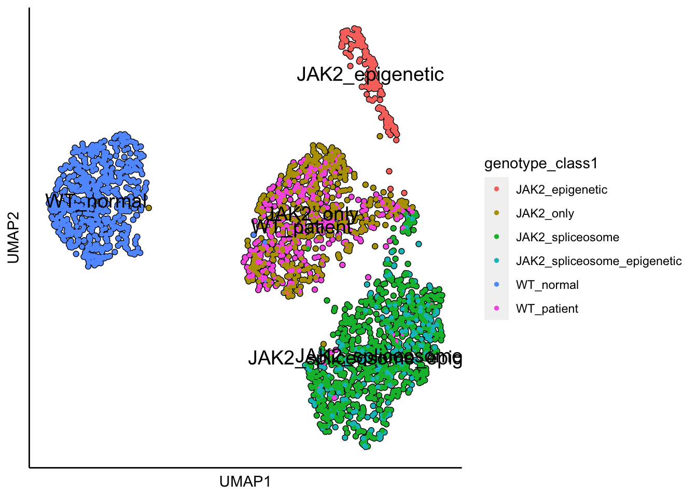
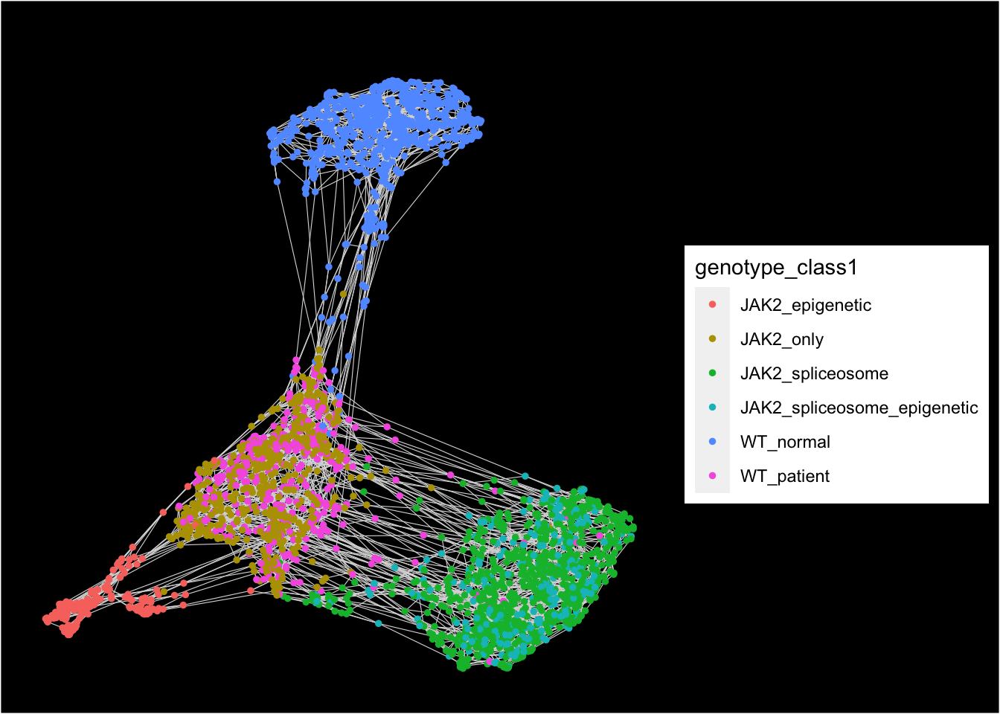
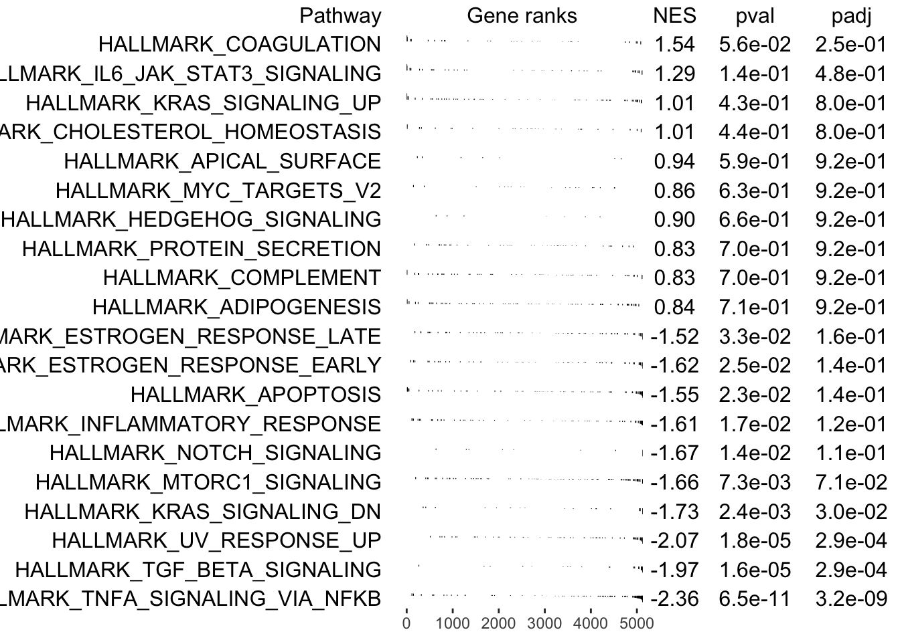

First, SingCellaR will be loaded into R and the ‘TargetSeq’ object is created. The example below shows how to add gene expression and cell information files into the object.
library(SingCellaR)
MPN<-new("TargetSeq")
MPN@GenesExpressionMatrixFile<-"../SingCellaR_example_datasets/TARGET_Seq/counts_HT_TARGET_GRCh38.v2.txt"
MPN@CellsMetaDataFile<-"../SingCellaR_example_datasets/TARGET_Seq/HT_TARGETseq_colData.qc_Ghr38.txt"
load_gene_expression_from_a_file(MPN,isTargetSeq = T,sep="\t")## [1] "The sparse matrix is created."MPN## An object of class TargetSeq with a matrix of : 33514 genes across 3593 samples.Next, cell information will be processed. The input “mitochondiral_genes_start_with” is the important parameter. The percentage of mitocondrial per cell will be calculated. For human, mitocondrial gene names start with “MT-”. The ERCC genes must be specify with the parameter ‘ERCC_genes_start_with’, if ERCC spike-in is incorporated.
TargetSeq_process_cells_annotation(MPN,mitochondiral_genes_start_with = "MT-",
ERCC_genes_start_with = "ERCC-")## [1] "List of mitochondrial genes:"
## [1] "MT-ND1" "MT-ND2" "MT-CO1" "MT-CO2" "MT-ATP8" "MT-ATP6" "MT-CO3"
## [8] "MT-ND3" "MT-ND4L" "MT-ND4" "MT-ND5" "MT-ND6" "MT-CYB"
## [1] "List of ERCC:"
## character(0)
## [1] "The meta data is processed."TargetSeq_plot_cells_annotation(MPN,type = "boxplot")TargetSeq_filter_cells_and_genes(MPN,min_Reads = 2000,
max_percent_mito = 10,
genes_with_expressing_cells = 10,max_percent_ERCC = 50)## [1] "The cells and genes metadata are updated by adding the filtering status."
## [1] "835/3593 cells will be filtered out from the downstream analyses!."To load the cell metadata information from TARGET-Seq cell information, the following function will be performed.
TargetSeq_load_cell_metadata(MPN,sep = "\t",a_column_of_the_cell_names = 1)## [1] "The cell metadata is updated!"Checking the updated metadata.
head(MPN@meta.data)## Cell sampleID UMI_count detectedGenesPerCell percent_mito percent_ERCC
## 1 TR4PL21_11B 2595 834 2.466281 0
## 2 TR4PL21_11C 4859 632 5.412636 0
## 3 TR4PL21_11D 5300 670 2.264151 0
## 4 TR4PL21_11E 5251 1271 3.599314 0
## 5 TR4PL21_11F 2282 798 3.637160 0
## 6 TR4PL21_11L 20403 1801 4.170955 0
## IsPassed cell.type donor timepoint donor.type primer.mix batch plate
## 1 TRUE cd34+ IF0137 baseline patient IF0137_mix batch_1 TR4PL21
## 2 TRUE cd34+ IF0137 baseline patient IF0137_mix batch_1 TR4PL21
## 3 TRUE cd34+ IF0137 baseline patient IF0137_mix batch_1 TR4PL21
## 4 TRUE cd34+ IF0137 baseline patient IF0137_mix batch_1 TR4PL21
## 5 TRUE cd34+ IF0137 baseline patient IF0137_mix batch_1 TR4PL21
## 6 TRUE cd34+ IF0137 baseline patient IF0137_mix batch_1 TR4PL21
## pool CD45RA CD90 CD38 lineage.viability CD34 CD123
## 1 TR4PL21_Q2 1502.17 2621.87 5156.63 12043.33 29906.12 3428.90
## 2 TR4PL21_Q1 1782.70 1887.77 14743.83 16879.47 21457.04 1700.39
## 3 TR4PL21_Q2 995.36 1545.84 7552.66 4882.79 17353.63 1342.27
## 4 TR4PL21_Q1 748.31 16677.71 11011.12 14496.51 29338.79 3951.90
## 5 TR4PL21_Q2 1348.57 2874.07 19794.60 12866.39 18098.87 2719.89
## 6 TR4PL21_Q2 2213.63 2963.91 37265.15 18894.65 10691.38 649.52
## genotypesall qcgenotype genes.detected
## 1 JAK2_HET_U2AF1_HET_TET2_pI1105_HET_ASXL1_p910_HET TRUE 839
## 2 JAK2_HET_U2AF1_HET_ASXL1_p910_HET TRUE 636
## 3 JAK2_HET_U2AF1_HET TRUE 702
## 4 JAK2_HET_U2AF1_HET_ASXL1_p897_HET TRUE 1250
## 5 JAK2_HET_U2AF1_HET_TET2_pI1105_HET_ASXL1_p910_HET TRUE 812
## 6 JAK2_HOM_U2AF1_HET TRUE 1830
## input.reads unique.mapped multimap MReads lib.size unmapped ercc.count
## 1 7566 4235 551 131 2741 2780 134
## 2 17580 10089 1658 445 5561 5833 696
## 3 16977 10024 1497 296 6301 5456 554
## 4 39883 9074 1282 336 5614 29527 354
## 5 30008 4791 658 158 2450 24559 177
## 6 46909 29782 4315 1330 21983 12812 748
## pc.uniquemapped pc.multimap pc.unmapped pc.ingenes pc.ercc pc.mit.reads
## 1 0.5597409 0.07282580 0.3674333 0.6472255 0.04888727 0.017314301
## 2 0.5738908 0.09431172 0.3317975 0.5511944 0.12515735 0.025312856
## 3 0.5904459 0.08817812 0.3213760 0.6285914 0.08792255 0.017435354
## 4 0.2275155 0.03214402 0.7403405 0.6186908 0.06305664 0.008424642
## 5 0.1596574 0.02192749 0.8184151 0.5113755 0.07224490 0.005265263
## 6 0.6348888 0.09198661 0.2731246 0.7381304 0.03402629 0.028352768
## genotype.class rnaseq.qc qc.all
## 1 realclone TRUE TRUE
## 2 realclone TRUE TRUE
## 3 realclone TRUE TRUE
## 4 realclone TRUE TRUE
## 5 realclone TRUE TRUE
## 6 realclone TRUE TRUEThe TARGET-Seq analysis piepline (developed by Rodriguez-Meira et al., Mol. Cell, 2019) provides QC information of cells. Therefore, those cells information will be included for further filtering.
my.cell_info<-subset(MPN@meta.data,qc.all=="TRUE")
my.cell_filtered<-subset(my.cell_info, UMI_count > 2000 & percent_mito < 10 & detectedGenesPerCell > 500 & pc.ercc < 50)
nrow(my.cell_filtered)## [1] 2679It is critical to add “IsPassed==TRUE” to the cells that pass the QC.
my.cell_info$IsPassed[my.cell_info$Cell %in% my.cell_filtered$Cell]<-TRUE
table(my.cell_info$IsPassed)##
## FALSE TRUE
## 119 2679Finally, the slot ‘meta.data’ in the MPN object will be updated.
MPN@meta.data<-my.cell_infoNext, to reproduce Figure 5a found in Rodriguez-Meira et al., Mol. Cell, 2019, the mutational information is classified into distinct genotyping categories as shown below.
cell_metadata<-get_cells_annotation(MPN)
cell_metadata$genotype_class1<-"NA"
JAK2_only<-c("\\bJAK2_HET\\b","\\bJAK2_HOM\\b")
cell_metadata$genotype_class1[grep(paste(JAK2_only,collapse="|"),cell_metadata$genotypesall)]<-"JAK2_only"
WT_normal<-c("\\bWT\\b")
cell_metadata$genotype_class1[grep(paste(WT_normal,collapse="|"),cell_metadata$genotypesall)]<-"WT_normal"
WT_patient<-c("\\bJAK2_WT\\b")
cell_metadata$genotype_class1[grep(paste(WT_patient,collapse="|"),cell_metadata$genotypesall)]<-"WT_patient"
JAK2_spliceosome<-c("JAK2_HET_SRSF2_HET","JAK2_HET_U2AF1_HET","JAK2_HOM_CBL_p404_HET_SRSF2_HET","JAK2_HOM_SF3B1_HET","JAK2_HOM_SRSF2_HET",
"JAK2_HOM_U2AF1_HET")
cell_metadata$genotype_class1[grep(paste(JAK2_spliceosome,collapse="|"),cell_metadata$genotypesall)]<-"JAK2_spliceosome"
JAK2_spliceosome_epigenetic<-c("JAK2_HET_U2AF1_HET_ASXL1_p910_HET","JAK2_HET_U2AF1_HET_TET2_pI1105_HET_ASXL1_p910_HET",
"JAK2_HET_U2AF1_HET_ASXL1_p897_HET")
cell_metadata$genotype_class1[grep(paste(JAK2_spliceosome_epigenetic,collapse="|"),cell_metadata$genotypesall)]<-"JAK2_spliceosome_epigenetic"
JAK2_epigenetic<-c("JAK2_HOM_ASXL1_p644_HET","JAK2_HOM_TET2_p1612_HET")
cell_metadata$genotype_class1[grep(paste(JAK2_epigenetic,collapse="|"),cell_metadata$genotypesall)]<-"JAK2_epigenetic"
cell_metadata_for_analysis<-subset(cell_metadata,genotype_class1!="NA") #2742 cells considered for this analysis
nrow(cell_metadata_for_analysis)## [1] 2742MPN@meta.data<-cell_metadata_for_analysisTo normalise TARGET-Seq data, the parameter ‘use.scaled.factor’ has to be set up as ‘FALSE’. This is to normalise by the mean of the library size.
normalize_UMIs(MPN,use.scaled.factor = F)## [1] "Normalization is completed!."get_variable_genes_by_fitting_GLM_model(MPN,mean_expr_cutoff = 1,disp_zscore_cutoff = 0.05,
quantile_genes_expr_for_fitting = 0.5,
quantile_genes_cv2_for_fitting =0.3)## [1] "Calculate row variance.."
##
|
| | 0%
|
|========= | 12%
|
|================== | 25%
|
|========================== | 38%
|
|=================================== | 50%
|
|============================================ | 62%
|
|==================================================== | 75%
|
|============================================================= | 88%
|
|======================================================================| 100%[1] "Using :4696 genes for fitting the GLM model!"
## [1] "Identified :3639 variable genes"remove_unwanted_genes_from_variable_gene_set(MPN,gmt.file = "../SingCellaR_example_datasets/Human_genesets/human.ribosomal-mitocondrial.genes.gmt",
removed_gene_sets=c("Ribosomal_gene","Mitocondrial_gene"))## [1] "6 genes are removed from the variable gene set."Here, the plot shows highly variable genes in the fitted GLM model.
plot_variable_genes(MPN,quantile_genes_expr_for_fitting = 0.5,quantile_genes_cv2_for_fitting =0.3)## [1] "Calculate row variance.."
##
|
| | 0%
|
|========= | 12%
|
|================== | 25%
|
|========================== | 38%
|
|=================================== | 50%
|
|============================================ | 62%
|
|==================================================== | 75%
|
|============================================================= | 88%
|
|======================================================================| 100%## PCA anlysis
runPCA(MPN,use.components=30,use.regressout.data = F)## [1] "PCA analysis is done!."Next, the number of PCs used for the donwstream analysis will be determined from the scree plot.
plot_PCA_Elbowplot(MPN)runUMAP(MPN,dim_reduction_method = "pca",n.dims.use = 10,n.neighbors = 20,
uwot.metric = "euclidean")## 22:34:18 UMAP embedding parameters a = 1.121 b = 1.057## 22:34:18 Read 2626 rows and found 10 numeric columns## 22:34:18 Using Annoy for neighbor search, n_neighbors = 20## 22:34:18 Building Annoy index with metric = euclidean, n_trees = 50## 0% 10 20 30 40 50 60 70 80 90 100%## [----|----|----|----|----|----|----|----|----|----|## **************************************************|
## 22:34:19 Writing NN index file to temp file /var/folders/c6/_w309xr54n7cphf9nw4x_ms40000gn/T//Rtmp4Jl4nD/file26b5245b0d08
## 22:34:19 Searching Annoy index using 8 threads, search_k = 2000
## 22:34:19 Annoy recall = 100%
## 22:34:19 Commencing smooth kNN distance calibration using 8 threads
## 22:34:20 Initializing from normalized Laplacian + noise
## 22:34:20 Commencing optimization for 500 epochs, with 67982 positive edges
## 22:34:23 Optimization finished## [1] "UMAP analysis is done!."plot_umap_label_by_a_feature_of_interest(MPN,feature = "donor",point.size = 1)plot_umap_label_by_a_feature_of_interest(MPN,feature = "donor.type",point.size = 1)plot_umap_label_by_a_feature_of_interest(MPN,feature = "batch",point.size = 1)plot_umap_label_by_a_feature_of_interest(MPN,feature = "genotype_class1",point.size = 1)UMAP plots show batch and donor effect. Limma will be used to preserve the genotypes of interest and to regress out batch and donor effect.
remove_unwanted_confounders(MPN,residualModelFormulaStr = "~donor+batch",
preserved_feature = "~genotype_class1")##
|
| | 0%Coefficients not estimable: (Intercept) donorIF0602## Warning: Partial NA coefficients for 2000 probe(s)##
|
|==== | 6%Coefficients not estimable: (Intercept) donorIF0602## Warning: Partial NA coefficients for 2000 probe(s)##
|
|======== | 12%Coefficients not estimable: (Intercept) donorIF0602## Warning: Partial NA coefficients for 2000 probe(s)##
|
|============ | 18%Coefficients not estimable: (Intercept) donorIF0602## Warning: Partial NA coefficients for 2000 probe(s)##
|
|================ | 24%Coefficients not estimable: (Intercept) donorIF0602## Warning: Partial NA coefficients for 2000 probe(s)##
|
|===================== | 29%Coefficients not estimable: (Intercept) donorIF0602## Warning: Partial NA coefficients for 2000 probe(s)##
|
|========================= | 35%Coefficients not estimable: (Intercept) donorIF0602## Warning: Partial NA coefficients for 2000 probe(s)##
|
|============================= | 41%Coefficients not estimable: (Intercept) donorIF0602## Warning: Partial NA coefficients for 2000 probe(s)##
|
|================================= | 47%Coefficients not estimable: (Intercept) donorIF0602## Warning: Partial NA coefficients for 2000 probe(s)##
|
|===================================== | 53%Coefficients not estimable: (Intercept) donorIF0602## Warning: Partial NA coefficients for 2000 probe(s)##
|
|========================================= | 59%Coefficients not estimable: (Intercept) donorIF0602## Warning: Partial NA coefficients for 2000 probe(s)##
|
|============================================= | 65%Coefficients not estimable: (Intercept) donorIF0602## Warning: Partial NA coefficients for 2000 probe(s)##
|
|================================================= | 71%Coefficients not estimable: (Intercept) donorIF0602## Warning: Partial NA coefficients for 2000 probe(s)##
|
|====================================================== | 76%Coefficients not estimable: (Intercept) donorIF0602## Warning: Partial NA coefficients for 2000 probe(s)##
|
|========================================================== | 82%Coefficients not estimable: (Intercept) donorIF0602## Warning: Partial NA coefficients for 2000 probe(s)##
|
|============================================================== | 88%Coefficients not estimable: (Intercept) donorIF0602## Warning: Partial NA coefficients for 2000 probe(s)##
|
|================================================================== | 94%Coefficients not estimable: (Intercept) donorIF0602## Warning: Partial NA coefficients for 1514 probe(s)##
|
|======================================================================| 100%
## [1] "Removing unwanted sources of variation is done!"runPCA(MPN,use.components=30,use.regressout.data = T)## [1] "PCA analysis is done!."Next, the number of PCs used for the donwstream analysis will be determined from the scree plot.
plot_PCA_Elbowplot(MPN)runUMAP(MPN,dim_reduction_method = "pca",n.dims.use = 10,n.neighbors = 20,
uwot.metric = "euclidean")## 22:34:57 UMAP embedding parameters a = 1.121 b = 1.057## 22:34:57 Read 2626 rows and found 10 numeric columns## 22:34:57 Using Annoy for neighbor search, n_neighbors = 20## 22:34:57 Building Annoy index with metric = euclidean, n_trees = 50## 0% 10 20 30 40 50 60 70 80 90 100%## [----|----|----|----|----|----|----|----|----|----|## **************************************************|
## 22:34:58 Writing NN index file to temp file /var/folders/c6/_w309xr54n7cphf9nw4x_ms40000gn/T//Rtmp4Jl4nD/file26b562832020
## 22:34:58 Searching Annoy index using 8 threads, search_k = 2000
## 22:34:58 Annoy recall = 100%
## 22:34:58 Commencing smooth kNN distance calibration using 8 threads
## 22:34:59 Initializing from normalized Laplacian + noise
## 22:34:59 Commencing optimization for 500 epochs, with 70486 positive edges
## 22:35:02 Optimization finished## [1] "UMAP analysis is done!."plot_umap_label_by_a_feature_of_interest(MPN,feature = "donor",point.size = 1)plot_umap_label_by_a_feature_of_interest(MPN,feature = "donor.type",point.size = 1)
plot_umap_label_by_a_feature_of_interest(MPN,feature = "batch",point.size = 1)
plot_umap_label_by_a_feature_of_interest(MPN,feature = "genotype_class1",point.size = 1)
runTSNE(MPN,dim_reduction_method = "pca",n.dims.use = 10)## [1] "TSNE analysis is done!."plot_tsne_label_by_a_feature_of_interest(MPN,feature = "genotype_class1",point.size = 1)runFA2_ForceDirectedGraph(MPN,dim_reduction_method = "pca",n.dims.use = 10)## [1] "Building Annoy index with metric = euclidean , n_trees = 50"## 0% 10 20 30 40 50 60 70 80 90 100%## [----|----|----|----|----|----|----|----|----|----|## **************************************************|## [1] "Searching Annoy index, search_k = 500"## 0% 10 20 30 40 50 60 70 80 90 100%
## [----|----|----|----|----|----|----|----|----|----|
## **************************************************|## [1] "Processing fa2.."
## [1] "Force directed graph analysis is done!."plot_forceDirectedGraph_label_by_a_feature_of_interest(MPN,feature = "genotype_class1",
background.color = "black",vertex.size = 1)
Below is an example of how to perform differential gene expression analysis between ‘WT_normal’ and ‘WT_patient’.
First, cell names per each group will be extracted from the cell metadata.
WT_normal.cells<-subset(MPN@meta.data,genotype_class1=="WT_normal")
WT_normal.cell_ids<-WT_normal.cells$Cell
WT_patient.cells<-subset(MPN@meta.data,genotype_class1=="WT_patient")
WT_patient.cell_ids<-WT_patient.cells$CellSecond, differential gene expression analysis will be performed.
DE.genes<-identifyDifferentialGenes(objectA = MPN, objectB = MPN, cellsA = WT_normal.cell_ids, cellsB = WT_patient.cell_ids)## [1] "Processing Fisher's exact test!"
## [1] "Processing Wilcoxon Rank-sum test!"
## [1] "Combining p-values using the fisher's method!"head(DE.genes)## Gene ExpA ExpB FoldChange log2FC ExpFreqA
## GIMAP7 GIMAP7 38.6958440 0.5000682 77.38113053 6.273910 339
## AC123912.4 AC123912.4 0.3018886 4.8313286 0.06248562 -4.000332 39
## DYNLL1 DYNLL1 35.6631112 5.1568363 6.91569576 2.789874 430
## CNOT1 CNOT1 1.5126984 4.3828158 0.34514304 -1.534734 122
## ELMSAN1 ELMSAN1 8.3102311 66.4716260 0.12501922 -2.999778 228
## BTG3 BTG3 1.6659861 17.8049370 0.09356877 -3.417829 67
## ExpFreqB TotalA TotalB ExpFractionA ExpFractionB fishers.pval
## GIMAP7 8 678 388 0.50000000 0.02061856 1.805764e-72
## AC123912.4 165 678 388 0.05752212 0.42525773 4.721279e-48
## DYNLL1 72 678 388 0.63421829 0.18556701 1.479443e-47
## CNOT1 223 678 388 0.17994100 0.57474227 1.669020e-39
## ELMSAN1 276 678 388 0.33628319 0.71134021 1.174696e-32
## BTG3 158 678 388 0.09882006 0.40721649 1.614010e-31
## wilcoxon.pval combined.pval adjusted.pval
## GIMAP7 1.510069e-56 8.036717e-126 7.321449e-123
## AC123912.4 3.775491e-50 3.988782e-95 1.816890e-92
## DYNLL1 3.099438e-49 1.011206e-93 3.070695e-91
## CNOT1 2.950290e-38 8.701114e-75 1.981679e-72
## ELMSAN1 1.841131e-38 3.490915e-68 6.360447e-66
## BTG3 3.340895e-35 8.157683e-64 1.238608e-61sig.genes<-subset(DE.genes,adjusted.pval < 0.05 & (ExpFractionA > 0.25 | ExpFractionB > 0.25) & abs(log2FC) > 2)
sig.genes<-sig.genes[order(abs(sig.genes$log2FC),decreasing = T),]plot_violin_for_differential_genes(objectA = MPN, objectB = MPN, cellsA = WT_normal.cell_ids, cellsB = WT_patient.cell_ids,
gene_list = rownames(sig.genes)[1:5],take_log2 = T,point.size = 1,point.alpha = 0.5)plot_heatmap_for_differential_genes(objectA = MPN, objectB = MPN, cellsA = WT_normal.cell_ids, cellsB = WT_patient.cell_ids,
gene_list = rownames(sig.genes))First, genes will be pre-ranked.
preranked.genes<-identifyGSEAPrerankedGenes(objectA = MPN, objectB = MPN,
cellsA = WT_normal.cell_ids, cellsB = WT_patient.cell_ids)## [1] "Processing Fisher's exact test!"
## [1] "Processing Wilcoxon Rank-sum test!"
## [1] "Combining p-values using the fisher's method!"Second, fGSEA will be performed with the HALLMARK gene sets.
GSEA.results<-Run_fGSEA_analysis(objectA = MPN, objectB = MPN,
cellsA = WT_normal.cell_ids, cellsB = WT_patient.cell_ids,
GSEAPrerankedGenes_info = preranked.genes,
gmt.file = "../SingCellaR_example_datasets/Human_genesets/h.all.v7.1.symbols.gmt",
plotGSEA = T)
## [1] "Processing GSEA!"save(MPN,file="../SingCellaR_example_datasets/Psaila_et_al/SingCellaR_objects/MPN_v0.1.SingCellaR.rdata")